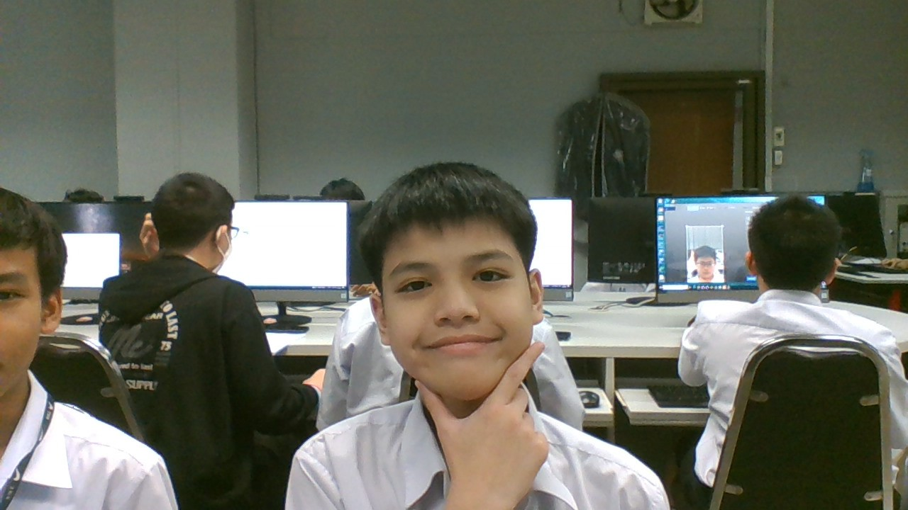

ครูในความทรงจำ..ที่ไม่ลืมเลือน 2568 🔥💀
นางสาววิยดา ไตรยวงค์ :
บทเพลงที่มอบให้ครู
นายสุวิทย์ งามผักแว่น :
บทเพลงที่มอบให้ครู
น.ส.ศรันรัตน์ ไผ่พงศาวงศ์ :
บทเพลงที่มอบให้ครู

จัดทำโดย : เด็กชายภคิน สูงสถิตานนท์ 213 เลขที่ 5